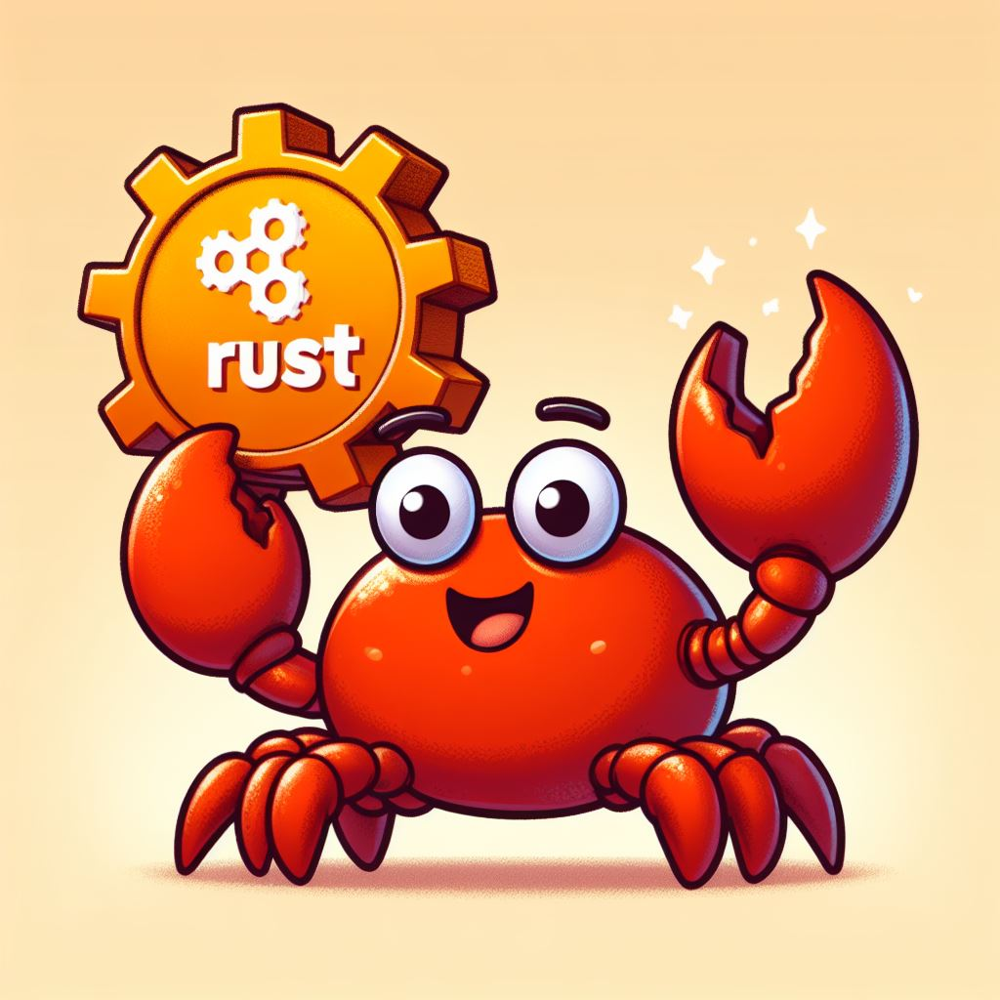

Introduction
Rust is a systems programming language that is fast, memory-efficient, and guarantees thread safety. It’s the future of safe, performant systems programming.
Key Reasons
- 🛡️ Memory Safety Without Garbage Collection: Rust ensures memory safety by using a system of ownership with rules that the compiler checks at compile time. This eliminates common bugs such as null pointer dereferencing and buffer overflows, which are prevalent in languages like C and C++.
- ⚙️ Concurrency Without Data Races: Rust's ownership system also helps in writing concurrent programs. The compiler checks for data races at compile time, making it easier to write safe and concurrent code without the risk of race conditions.
- 🚀 High Performance: Rust is designed for performance and can match the speed of C and C++ while providing memory safety. It achieves this through zero-cost abstractions, meaning you pay only for what you use.
- 🌟 Great Tooling and Community:
- Cargo: Rust's build system and package manager make it easy to manage dependencies, run tests, and build projects.
- Rustfmt: Ensures a consistent coding style by formatting your code automatically.
- Clippy: A linting tool that provides helpful suggestions to improve your Rust code.
- Documentation: Rust has extensive documentation and a friendly, active community that is always ready to help newcomers.
- 💡 Expressive Type System: Rust has a rich and expressive type system, including features like algebraic data types and pattern matching. These features enable developers to write more expressive and readable code.
- 🔧 Zero-cost Abstractions: Rust’s abstractions are designed to have zero runtime cost. This means you can use high-level constructs without worrying about their impact on performance.
- 🌐 Cross-platform Development: Rust can be used to write software that runs on various platforms, including embedded systems, desktop applications, and web applications using WebAssembly.
- 🕸️ WebAssembly: Rust is one of the most popular languages for WebAssembly. It allows you to compile Rust code to run in the browser, providing near-native performance for web applications.
- 🌍 Growing Ecosystem: The Rust ecosystem is rapidly growing, with a wide range of libraries and frameworks available for various domains, including web development (Rocket, Actix), game development (Amethyst), and more.
- 📝 Modern Syntax: Rust’s syntax is modern and intuitive, borrowing the best parts of other languages while avoiding their pitfalls. This makes it relatively easy to learn and use effectively.
- 🔒 Error Handling: Rust's error handling is robust and encourages the use of Result and Option types instead of exceptions. This leads to more predictable and maintainable code.
- 🏢 Adoption by Major Companies: Rust is being adopted by major companies for critical systems. For instance:
- Mozilla: Uses Rust for its Firefox browser engine (Servo).
- Microsoft: Uses Rust for secure software components.
- Dropbox: Uses Rust for performance-critical components.
- 📚 Community and Learning Resources: Rust has an incredibly supportive community and a plethora of learning resources, including:
- The Rust Book: A comprehensive guide to learning Rust, available for free.
- Rustlings: Small exercises to get you used to reading and writing Rust code.
- Rust by Example: A collection of runnable examples to help you understand Rust's syntax and concepts.
Example of Rust Code
fn main() {
let mut numbers = vec![1, 2, 3, 4, 5];
for number in &mut numbers {
*number *= 2;
}
println!("{:?}", numbers); // Output: [2, 4, 6, 8, 10]
}FizzBuzz in Rust
fn main() {
for n in 1..=100 {
if n % 15 == 0 {
println!("FizzBuzz");
} else if n % 3 == 0 {
println!("Fizz");
} else if n % 5 == 0 {
println!("Buzz");
} else {
println!("{}", n);
}
}
}